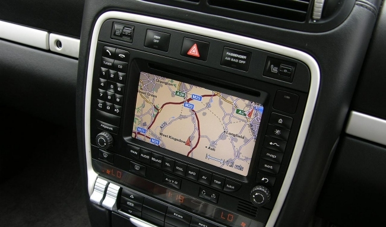
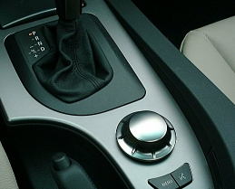

golem.de

Studie
Autokäufer nutzen Assistenzsysteme oft nicht
Selbst lenken, selbst bremsen und selbst einparken - Autofahrern stehen heute zahlreiche Funktionen zur
Verfgung, die sie einer Studie zufolge aber oft gar nicht kennen oder nutzen. Auch bei j�ngeren Neuwagenk�ufern
steht die On-Bord-Elektronik nicht hoch im Kurs.

Nach der Studie 2015 Drive Report von J. D. Power sind viele Autofahrer an den Zusatzfunktionen ihrer Fahrzeuge
nicht interessiert. 20 Prozent der Neuwagenk�ufer haben dem Ergebnis nach die H�lfte der Funktionen noch nie ausprobiert.
F�r die Studie wurden 4.200 K�ufer in den USA befragt.
Nach der Studie 2015 Drive Report von J. D. Power sind viele Autofahrer an den Zusatzfunktionen ihrer Fahrzeuge
nicht interessiert. 20 Prozent der Neuwagenk�ufer haben dem Ergebnis nach die H�lfte der Funktionen noch nie ausprobiert.
F�r die Studie wurden 4.200 K�ufer in den USA befragt.
Nach der Studie 2015 Drive Report von J. D. Power sind viele Autofahrer an den Zusatzfunktionen ihrer Fahrzeuge
nicht interessiert. 20 Prozent der Neuwagenk�ufer haben dem Ergebnis nach die H�lfte der Funktionen noch nie ausprobiert.
F�r die Studie wurden 4.200 K�ufer in den USA befragt.
Kommentar
Akku im Auto is die ganze Zeit dabei sich zu entladen und sich zu laden. Ne...
Verwandte Artikel
Gesichtsscanner f�r Autofahrer soll Unf�lle vermeiden